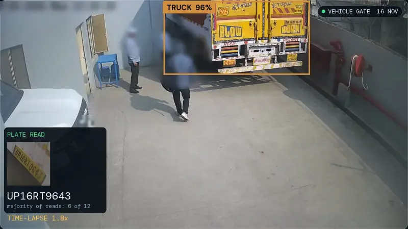

How VisorVolt works
One idea, in four steps: build it for your site, run it on your site, have a person audit it, and improve it every month.
Step 1
We build it from your own footage.
No two sites look alike, so we do not hand you a ready-made model. We choose about 40 images from your own recordings and label them ourselves. You run no labelling project. The same method works for gates, docks, lines and doors, because the work is in fitting it to your site.
In our tests on 39 public datasets, 40 labelled images reached a median of about 89% of a fully hand-labelled model. See the research →

Step 2
It runs on a computer on your site.
Detection, counting, tracking and review run on one computer on your site, on the cameras you already have. At Healthfields one computer runs five services and four nightly reports. Your video stays on site and nothing on site has to reach the internet.

Step 3
A person checks a random sample.
A count is only worth something if someone has checked it. A person counts a random sample of windows and compares it with the camera. At Healthfields: 141 counted by camera and 141 by a person over 38 sampled windows on two unseen days (18 and 19 November 2026). The camera was 102 against a person's 103 on one dispatch day. Every count has its clip, so any row can be checked by eye.

Step 4
It improves, and a person approves every change.
The people who audit also find where the camera was wrong. Those misses go to our improvement agent, which proposes a fix. A person approves every change before it reaches your site, as a signed update that your computer checks. Nothing deploys itself.
This is how the system is designed to work. We will publish how the error changes month by month as more audited months accumulate.
What stays on your site, and what leaves.
On your site: your live and recorded video, detection, counting, review and reports. Leaves your site, only by agreement: the frames we pick to label, and the retraining, which happens in our cloud or in yours. The new version comes back as a signed file.
Where to begin.
Send a few minutes of footage from one camera, or tell us what you want counted or checked. We will tell you what to expect before you buy.
Questions
Do you need new cameras?
Usually not. Healthfields runs on its existing CCTV cameras. Tell us the camera and what you want counted, and we will say what to expect before you buy.
What is a checkpoint?
A fixed place where something has to be counted, logged or checked.
Who audits the counts?
A person counts a random sample and compares it with the camera.
Does it need the internet?
No. Counting, tracking and review run on a computer on your site.
What if the checkpoint is not on your list?
Show us. We build for your site and are not limited to a fixed menu of models.